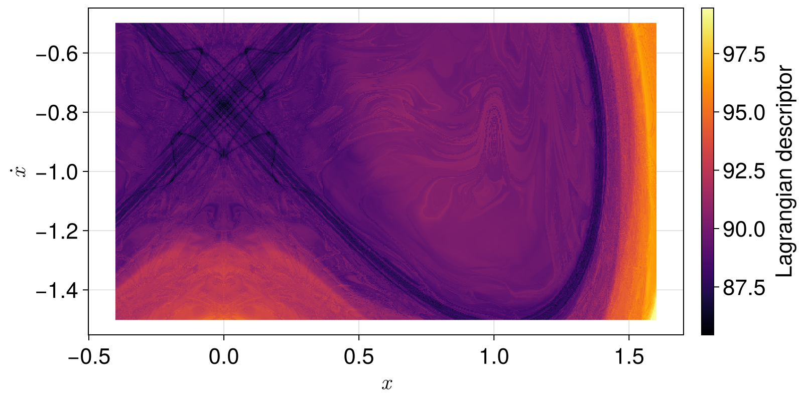

LagrangianDescriptors.jl
LagrangianDescriptors — Module
LagrangianDescriptors.jl


LagrangianDescriptors.jl is a Julia package for painting the phase portrait of dynamical systems with the method of Lagrangian descriptors, which reveals singular features of the dynamics, such as stable and unstable manifolds, by coloring each initial condition according to the solution through it. It provides
- Lagrangian descriptors of ordinary, random and stochastic differential equations, given as
ODEProblems,RODEProblems andSDEProblems of the SciML ecosystem, forward and backward in time. - Descriptors given by the integral of any infinitesimal descriptor along the solutions, or by the increments of the solutions, as for stochastic equations.
- Means over realizations of the noise, with independent noise for each initial condition, or with the same noise path for all of them.
- Stopping solutions that diverge, separately in each direction of time.
- Plots with Plots.jl or Makie.jl, as heatmaps of grids of initial conditions, scatter plots of other collections, two-dimensional slices of higher-dimensional systems, or in three dimensions, e.g. as surfaces of initial conditions.

The package is not registered yet. To install it, run import Pkg; Pkg.add(url = "https://github.com/JuliaDynamics/LagrangianDescriptors.jl").
All further information is provided in the documentation, which you can find online or build locally by running the docs/make.jl file.
Getting started
- The method of Lagrangian descriptors explains the method and how the package computes the descriptors.
- Choosing the descriptor and the time window shows the effect of the choices that shape the pictures, with some guidance on them.
- The tutorials on ordinary, random and stochastic differential equations go through the use of the package step by step, and Alternative via post-processing compares it with computing the descriptors from solutions of the original equations.
- The Examples show the method on classical systems, from simple ones to chaotic and stochastic ones.
- The API documents all functions and types.
- The References list the literature on the method.
A first example
Here is the code that computes the Lagrangian descriptors in the image above, of a periodically forced Duffing equation, revealing some of the structures of its dynamics.
using OrdinaryDiffEq, CairoMakie
using LinearAlgebra: norm
using LagrangianDescriptors
function f!(du, u, p, t)
x, y = u
A, ω = p
du[1] = y
du[2] = x - x^3 + A * sin(ω * t)
end
u0 = [0.5, 2.2]
tspan = (0.0, 13.0)
A = 5.0; ω = 2π; p = (A, ω);
prob = ODEProblem(f!, u0, tspan, p)
M(du, u, p, t) = norm(du)
uu0 = [[x, y] for y in range(-1.5, -0.5, length=301), x in range(-0.4, 1.6, length=601)]
lagprob = LagrangianDescriptorProblem(prob, M, uu0)
lagsol = solve(lagprob, Tsit5())
fig, ax, plt = heatmap(lagsol; axis = (xlabel = L"x", ylabel = L"\dot{x}"))
Colorbar(fig[1, 2], plt; label = "Lagrangian descriptor")
fig
Developers
JuliaDynamics/LagrangianDescriptors.jl is currently being developed by Ricardo M. S. Rosa.
Cite
Just cite the github repo JuliaDynamics/LagrangianDescriptors.jl for now, while the package is not yet registered.